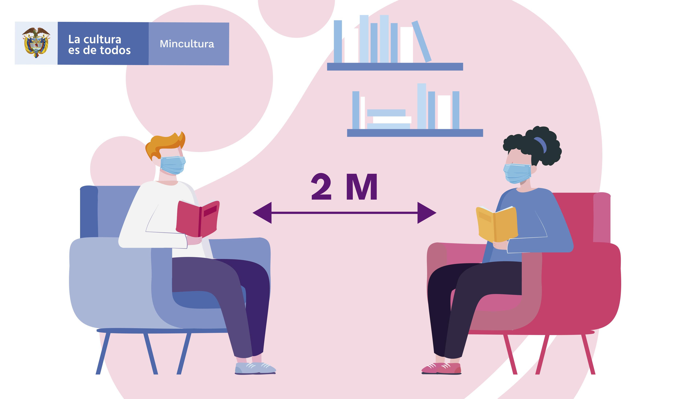

| Fecha de inicio | Fecha de finalización | Cupos disponibles |
|---|---|---|
| 1º de Marzo de 2021 | 1º de Abril de 2021 | 100 |

|  |
En el marco de la emergencia sanitaria por COVID-19 decretada por el Gobierno
Nacional, la Red Nacional de Bibliotecas Públicas (RNBP) ha elaborado varios documentos y guías con
indicaciones para la prestación de los servicios bibliotecarios, el cuidado y protección del
personal bibliotecario y los usuarios, la adecuada gestión de los espacios y la continuidad de la
oferta de actividades y programas de las bibliotecas públicas en el país.En este marco, la RNBP
elaboró un kit de señalización con las normas y orientaciones de bioseguridad y prestación de los
servicios para las bibliotecas públicas adecuado para la reapertura de los espacios
bibliotecarios. |
Para seguir brindando elementos teóricos y prácticos que enriquezcan la labor que realizan las bibliotecarias y bibliotecarios de las bibliotecas públicas y otras unidades de información del país, la Biblioteca Nacional de Colombia (BNC) y la Red Nacional de Bibliotecas Públicas (RNBP) abren las inscripciones al primer curso gratuito del 2021, disponible en su Aula Virtual.
El programa se realizará del 1º de febrero al 1º de marzo, y tiene un carácter autoformativo, de manera que cada participante deberá hacer el seguimiento y gestionar su propio proceso de aprendizaje. No obstante, el Aula Virtual de la Biblioteca Nacional de Colombia cuenta con un soporte técnico permanente a través del cual se responderán las inquietudes o dudas que se presenten, bien sea con los datos de acceso o acerca del funcionamiento de la plataforma virtual.
| Fecha de inicio | Fecha de finalización | Cupos disponibles |
|---|---|---|
| 1º de Marzo de 2021 | 1º de Abril de 2021 | 100 |